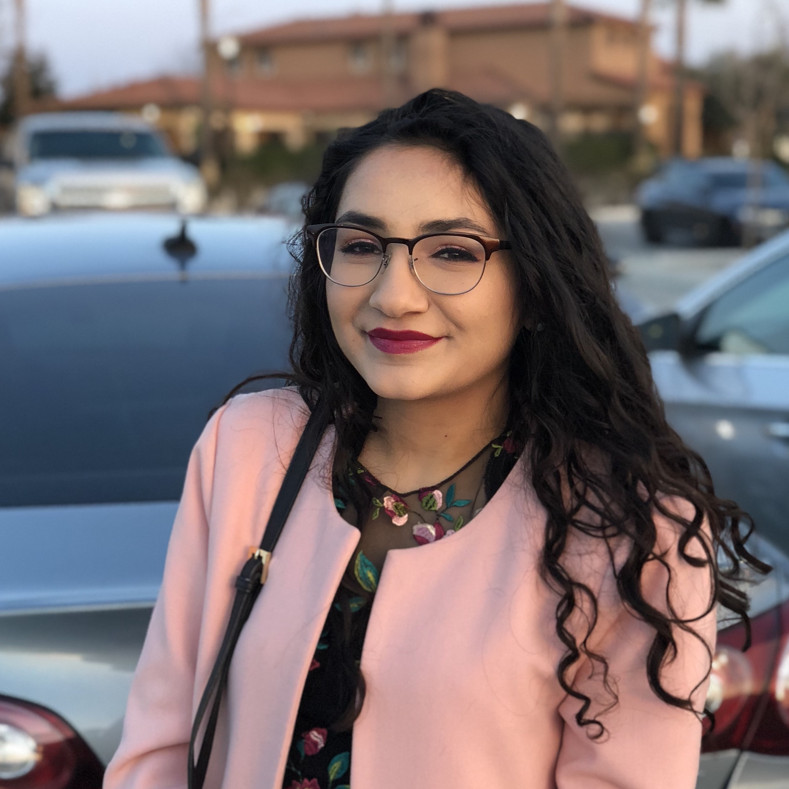

Introduction
Name in Arabic: سمر الحمداني 🗣️

480 Lincoln Dr,
Madison, WI 53705
Lately, I have been thinking about some cool problems at the intersection of harmonic analysis and geometry. I've been especially interested in certain generalized Radon-like transforms. I'm also developing an interest in some Fourier restriction problems.
I'm a co-organizer for Gender Minorities in Math at Wisconsin, which is the department's graduate portion of our local AWM chapter. Previously, I co-founded and co-organized the Graduate Analysis and PDEs Seminar. Prospective students[1] interested in either GmMaW's activities or studying analysis at UW Madison are welcome to contact me.
Before starting the doctoral program, I earned my B.A. in Math, B.S. in Biomedical Physics, and M.S. in Math from Fresno State (go Bulldogs!). Afterwards, I briefly earned a living as a data analyst and mathematical statistician. My hobbies tend to change with the seasons; nowadays, I enjoy spending my time weightlifting, experimenting with various salsa recipes, and exploring Madison's beautiful trails alongside some wild turkeys.
This website is currently being redone--sorry! The best way to keep up with the happenings of my enthralling life is by email: alhamdani at math dot wisc dot edu. My CV is also available upon request. I generally reply to emails within an $\varepsilon$-neighborhood of 24 hours on business days.
[1] I receive many emails from prospective students. I am, regretfully, not an appropriate person to ask about the activities of the other research groups. I recommend you contact my peers who work in the field you are interested in, or (even better!) are advised by faculty whose research interests align with your own.